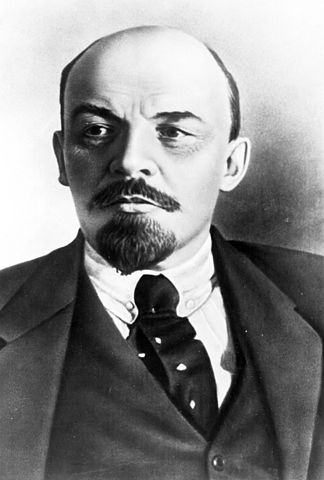

Russia

Dr. Christopher N. Lawrence
Middle Georgia State University
POLS 2301: Comparative Politics
Geography
Russia, officially known as the Russian Federation (Российская Федерация or Rossiyskaya Federatsiya), spans across the northern part of Asia and the easternmost portion of Europe. It is the largest country by area in the world, spanning 11 time zones.
However, most of Russia is thinly populated; most Russians live in the western and southwestern portions of the country.
Language and Culture

Like many other eastern European languages, Russian is written in an alphabet based on Greek known as Cyrillic, after Saint Cyril, who was responsible for converting many of the Slavs to Christianity.
Some letters are more-or-less the same as in the Latin alphabet used in English, while some are different; some Cyrillic letters have the same shapes as Latin letters but different meanings.
Russia and much of eastern Europe historically was under the influence of the Orthodox Church, which broke with the Roman Catholic Church in 1054 AD.
Early History

Various Slavic tribes united in the 7th–9th centuries in the western portion of modern Russia and areas of modern Belarus and Ukraine into a federation known as the Rus' or Kievan Rus'.
Its capital was first in modern Russia at Novogorod, but was moved to the more defensible location of Kiev (in modern Ukraine) in the 9th century.
The Rus' was relatively stable for a few centuries, but fell apart in the 13th century in the face of invasions by the Mongols and internal division within the state.
The Emergence of Moscow

Under Mongol rule, various small states vied for influence as tributary states of the Mongols (or Tatars). One of these states was the principality of Moscow, also known as Muscovy.
The rulers of Moscow were able to gain power as trusted agents of the Tatars; when the Tatars became weaker, Muscovy drove them off of Russian lands, further increasing Moscow's stature.
The most powerful early ruler was Ivan III, who tripled the size of Muscovy, imposed absolute rule on his subjects, and built up the reputation of the nascent Russian state.
Tsardom and the Romanovs
Ivan IV, better known as Ivan the Terrible, was the first Russian ruler to style himself as tsar (from “ceasar,” or emperor). He lived up to his nickname by ruthlessly dominating the Russian nobility, although he was also known as an effective statesman and reformer at times as well.
In the decades after Ivan's death, Russia was plunged into chaos and was even ruled, for a time, by the neighboring Polish-Lithuanian Commonwealth. Eventually the foreign rulers were driven out, and Russian self-rule restored.
The new line of tsars came from the Romanov family, who would rule Russia continuously for the next 300 years, until the collapse of the monarchy in 1917.
Absolutism and Expansion
Even more than the French, the Romanovs practiced absolutist rule. At a time when other European countries were already abandoning serfdom, Russia widened its use. And while the first Romanov tsar, Michael I, was actually elected by a national assembly, the new line of emperors became increasingly autocratic.
During the late 1600s and early 1700s, under Peter the Great, Russia expanded across Siberia and conquered neighboring European territories to become the world's largest country.
Peter also sought to “Europeanize” Russia, building an extravagant new capital, Saint Petersburg (later known during communist times as Petrograd and Leningrad), on the Baltic Sea. He also “modernized” Russia by drawing on the inspiration of the French absolutist kings like Louis XIV.
19th Century Reform: Too Little, Too Late
Napoleon's armies—although ultimately defeated, thanks largely to the harsh Russian winter—made Russians aware just how far behind western Europe their country was. Russians were divided between those who wanted to emulate the West more closely and those who wanted to stand up for a unique, Slavic culture.
Meanwhile, the tsars rarely paid much heed to the need for political and economic reform. Although the serfs were nominally freed under Alexander II in 1861, peasant life was still brutal and other political reforms were lacking.
Anarchists and Communists
The lack of meaningful political reform led to radical movements emerging in Russia. Some intellectuals rejected the ideas of the state and traditional government entirely. Others favored a Marxist revolution to bring about a socialist state, but disagreed as to how they might make it come about.
The secret police within Russia were very effective in rooting out revolutionary groups across the spectrum, so many of these groups' leaders were forced into exile. One of these groups, the Russian Social Democratic Labor Party, would become critical in the decades to come.
Mensheviks and Bolsheviks
Gradualists tended to favor improvements in working conditions for peasants and factory workers, along with industrialization, in the hopes that absolutism would give way to capitalism, which in turn would fall to socialism, per the predictions of Karl Marx.
Militants favored revolution and a direct transition from Russian absolutism to socialism. Their leaders, like Vladimir Lenin, believed that Marx's economic ideas could be fused with a political approach called democratic centralism: a free debate followed by ironclad party discipline once a course of action has been decided.
Lenin's group within the Russian socialist movement became known as the Bolshevik faction.
The Russo-Japanese War
The expanding Russian empire in the east came into conflict with Japanese expansion into modern Korea and northern China (Manchuria). The Russians thought they could easily defeat Japan, but instead suffered a humiliating defeat.
Russians rose up in protest against the tsar, Nicholas II, who was forced to offer reforms, including elections to a national parliament, the Duma.
While this was a baby step toward mass democracy, Nicholas kept real power under his control by making ministers accountable to him, not the elected Duma. Few Russians were satisfied.
The February Revolution

In World War I, Russia was one of the allies that were arrayed against the Central Powers (Germany and Austria-Hungary). However, the war went very badly for Russia, whose armies again were proven inferior to those of their rivals.
In March 1917 (late February under the old Russian calendar), moderate politicians forced Nicholas II from power and established the Provisional Government under Alexander Kerensky, a social democrat. Kerensky, however, vowed to continue the war, an unpopular stance among the Russian people.
The October Revolution
The Germans hoped to get Russia out of the war by provoking continued unrest there; they gave Lenin and several other communists free passage through their territory to go to Russia and foment revolution.
The Provisional Government had control of the army, but the Bolsheviks organized the soviets—councils of workers, peasants, and soldiers—to undermine state power.
In late October on the old Russian calendar (early November), Lenin and the St. Petersburg soviet rose up and ousted the Provisional Government. They quickly sued for peace with Germany in the Treaty of Brest-Litvosk on terms very favorable to the Germans.
The Civil War and War Communism
Russian opponents of the Bolsheviks, and World War I allies who felt betrayed by Russia's withdrawal from the conflict with Germany, waged a civil war to stop the Bolsheviks from gaining control of the Russian Empire. The anti-communist “Whites” were eventually defeated by the “Reds,” but at a heavy cost.
At the same time the civil war raged, Lenin tried to implement a socialist economic system by nationalizing the entire economy. Ironically, only American charity saved the Russian people under war communism from mass starvation as the forced collectivization of agriculture failed miserably.
The New Economic Policy
At the conclusion of the civil war, the former Russian Empire was reconstituted as the Union of Soviet Socialist Republics (USSR; Cyrillic: СССР). Although theoretically the USSR was a federation of states, in practice Russia and ethnic Russians called the shots.
The period of war communism demonstrated that Russia wasn't ready yet for full-blown socialism. Lenin implemented the New Economic Policy, which limited state control to heavy industry and returned most farming, light industry, and commerce to private ownership. Not surprisingly, the Soviet economy began to recover.
Lenin died in 1924, leaving no clear successor. Over the next two years, various leaders jockeyed for power.
Joseph Stalin
When Joseph Stalin came to power in 1926, he began a series of purges designed to eliminate the other early Bolshevik leaders along with other rivals. Estimates suggest over a million people were killed; millions more were imprisoned, exiled, or removed from government posts.
Stalin also initiated a program of dekulakization to bring agriculture under state control by killing hundreds of thousands of peasant farmers and their families. These policies caused a massive famine, leading to between 5 and 8 million deaths.
Stalin in World War II
Stalin and Hitler, despite being ideological opponents, secretly cooperated early in the war to divide Poland. On Stalin's orders, thousands of Poles were massacred by the Soviets, including both civilians and prisoners of war.
When Hitler turned on Stalin and invaded, the Soviet military was taken by complete surprise; it was also ill-equipped and weak due to Stalin's purges. The assault went well initially for the Germans, but the failure to capture Moscow and Leningrad quickly led to the Soviets being able to regroup in 1942 and turn the tide.
In total, 27 million Soviet citizens died during the war; over two-thirds were civilians.
Stalin After World War II

After the war, Stalin brought most of the countries of central and eastern Europe that had been liberated from Germany under communist one-party rule; most stayed aligned to the USSR as part of the Warsaw Pact until 1989.
He also supported the spread of communism in Asia, bolstering the Chinese Communist Party and helping establish the North Korean regime.
Within the Soviet Union, he fostered a cult of personality. He also emphasized Russian nationalism—despite being a Georgian, not a Russian, himself.
Stalin died in 1953 under mysterious circumstances; he was likely assassinated by the head of the KGB, Lavrentiy Beria.
Nikita Khrushchev
Stalin's successors dismantled his cult of personality and faced more accountability from their fellow party leaders.
After a brief period of in-fighting (which culminated in an internal party coup), new leader Nikita Khrushchev put in place a policy of de-Stalinization.
Although he did reduce repression within the Soviet Union, he maintained the Soviets' iron grip on eastern Europe and presided over an era of great tension with the United States, most notably during the Cuban Missile Crisis in 1962.
Khrushchev himself was deposed in 1964, ostensibly on the basis of “advanced age and ill health.”
Leonid Brezhnev

After Khrushchev was deposed, Leonid Brezhnev was made general secretary of the CPSU. Under his watch, the Soviets lost the “space race,” tensions emerged with China, and economic issues and corruption became increasingly problematic.
In 1979, he launched an invasion of Afghanistan to support the communist government in Kabul; the Russians were quickly bogged down in conflict with mujahideen guerrillas supported by the United States.
Brezhnev died in office in 1982, although real power had passed to several others in 1981 due to his ill health.
The Last Soviet Rulers

Brezhnev was succeeded by two short-lived rulers, Yuri Andropov (1982–84) and Konstantin Chernenko (1984–85). Andropov realized the depth of the problems facing the Soviet Union and began a program of reform and continued arms limitation talks with the West, but became seriously ill just months into his leadership. Chernenko was already terminally ill when he became general secretary.
The last Soviet leader was Mikhail Gorbachev (1985–91). Initially expected to continue Andropov's program of gradual reform, he eventually was forced by economic circumstances to introduce much more drastic change.
Institutions Under Communism
In theory, the institutions of the Soviet state and those of the Communist Party were separate. In practice, they were deeply intertwined, and control of the Party meant control of the state.
The gensek or general secretary of the Communist Party was usually the effective ruler, although after Stalin he could not rule completely unchecked; the other members of the Politburo could step in and overrule the general secretary's decisions.
Theoretically, the power of the state was in the hands of a legislature known as the Supreme Soviet; in practice, its powers were exercised by Politburo members who were appointed as a matter of course to the Presidium and key ministerial positions.
Soviet Bureaucracy
The socialist economic system required a massive bureaucracy to maintain and control it. The bureaucracy was kept under the control of the Communist Party through the system of nomenklatura; only those favored by the party could be appointed to the most important and prestigious jobs.
The operation of the Soviet economy was orchestrated by Gosplan, the State Planning Committee; it was responsible for implementing the Five-Year Plans developed by the Party. To work, central planning relied on near-perfect knowledge of what would be needed and when it would be required.
The planners often lacked knowledge of either, leading at times to comical results—usually massive overproduction or underproduction of needed goods.
Chekists: The KGB
To maintain its control, the Soviet Union had an extensive state security police bureau that went by various names over the years. After Stalin died, it was known as the Committee on State Security, or the KGB.
Like the former East German Stasi, the KGB extensively monitored the private lives of Soviet citizens. Political dissidents could be sent to the gulag, forced to move to “closed cities” under KGB control, institutionalized in mental hospitals, fired from their jobs, or harassed by KGB operatives.
Modern Russia has a body known as the FSB that is effectively the successor of the old KGB.
Glasnost and Perestroika
By the 1980s, it was clear that the Eastern Bloc was unable to keep up with the West. The USSR was beset by widespread corruption and inefficiency, compounded by worsening public services and alcoholism.
Gorbachev concluded that the Soviet state needed fundamental restructuring (perestroika) and greater openness to criticism (glasnost). Private sector businesses were allowed again, and greater criticism of government and party policies was tolerated.
However, even at the end, Gorbachev wanted to preserve Marxism-Leninism and the USSR, at least in some form.
Unintended Consequences
The biggest unintended consequence of glasnost was the return of nationalism, not just in the USSR's republics but also in the Eastern Bloc. People under communist rule also became more aware of the better lifestyle most Westerners enjoyed and the full extent of Stalin's crimes.
Following Gorbachev's decision to allow the Warsaw Pact countries to democratize without Soviet intervention, nationalists in the Baltic and Caucasus republics agitated for independence from the Russian-dominated USSR.
The August Coup
When the CPSU's monopoly on power was removed by Gorbachev, nationalist parties won elections in several Soviet republics and moved toward independence. Meanwhile, reformist former Politburo member Boris Yeltsin became the leader of the Russian Supreme Soviet, increasing tension between the Russian and USSR governments.
The final death knell was the attempted coup against Gorbachev in August 1991. Although the coup failed and Gorbachev was reinstated as president, real power was now in the hands of Yeltsin, who had led to opposition to the coup in Moscow. The CPSU was dissolved and banned, and most of the republics declared independence.
Denouement
In December, the four republics that had not declared independence did so, effectively abolishing the USSR, and formed the Commonwealth of Independent States in its place.
With no republics left, Gorbachev bowed to the inevitable. With his resignation as president, the USSR was officially dissolved on December 25, 1991.
The Crisis of 1993
Yeltsin at first was very popular, due to his role in the breakup of the USSR and the fall of Communism. However, his economic “shock therapy” policies were deeply unpopular, and led to tensions with the Congress of People's Deputies, the Russian parliament at the time.
In September 1993, the tensions came to a head, as Yeltsin tried to dissolve the parliament while the CPD attempted to impeach Yelstin for violating the Constitution (by dissolving parliament). After days of street fighting between the two sides' supporters, interior ministry forces loyal to Yeltsin stormed the Russian White House building.
A New Constitution

In the aftermath, a new Constitution was adopted, modeled on that of France, strengthening presidential power at the expense of the new Federal Assembly.
However, Yeltsin also got along poorly with the new legislature, and he was unable to continue many of his reforms.
Vladimir Putin Takes Power
Toward the end of his presidency, Yelstin appointed former KGB operative Vladimir Putin as his prime minister and handed increasing power over to him as his health continued to deteriorate.
When Yeltsin resigned from office on December 31, 1999, Putin took over as acting president until elections were held in 2000.
Formal Institutions Today
Russia has a semipresidential system similar to that of France: the president chooses a prime minister who is accountable to parliament.
Unlike in France, parliament's control over the cabinet is more limited. A censure (no confidence) vote only requires the president to act if a confidence motion is passed twice within three months; even then, the president can normally call for new elections to the Duma rather than dismissing the cabinet.
The President
The current president of Russia is Vladimir Putin of the United Russia party. Putin is in his third term as president; he served two terms from 2000–08, and was elected to a third term in 2012 with 63.6% of the vote.
As in France, if no candidate receives an absolute majority in the first ballot, a runoff between the top two candidates takes place. Unlike in France, runoffs in Russia have been rare.
Until 2012, presidents served four-year terms and, like in France, could only serve two consecutive terms. Since 2012, presidents now serve six-year terms.
The Prime Minister and Cabinet
The prime minister and cabinet, like in France, is appointed by the president.
The current prime minister is Dmitry Medvedev. He previously served as a cabinet member during Putin's first term in office, and was president from 2008–12.
In the event of the president's death or resignation from office, the prime minister becomes acting president until new elections are held within 90 days.
The State Duma
Russia's bicameral parliament is officially known as the Federal Assembly.
The lower house is known as the State Duma. 450 members are elected from across Russia.
Currently, the Duma is elected via party-list proportional representation, with a 7 percent threshold for entry; unlike the German MMP system or in Wales and Scotland, there are no constituency seats.
Beginning in 2016, the Duma will return to a parallel voting system with 225 proportional seats and 225 seats elected from single-member districts; this system was also used before the 2007 election.
The Federation Council

The upper house is known as the Federation Council. There are 170 members, with two members each from the various federal subjects of Russia; one is elected by the legislature, while the other is appointed by the governor of the territory.
In addition to considering legislation proposed by the Duma, the Council also is required to approve presidential decrees of states-of-emergency and martial law, and to approve certain presidential nominations.
Also, the Chairman of the Federation Council would become acting president if the president and prime minister were both incapacitated.
The Judiciary
Like in Germany and the United States, the Russian constitution establishes a Constitutional Court that can review the legality of government actions and laws.
However, the courts in Russia (including the Constitutional Court) are widely believed to lack genuine independence from political influence, particularly from the president. Putin's political opponents are frequently convicted of criminal activities, while those suspected of crimes against opposition figures and independent journalists are rarely brought to justice.
Political Parties in Russia
Only four parties are currently represented in the State Duma:
United Russia is the ruling party, organized by Putin and his supporters.
Unlike in most post-Communist countries, the Communist Party of Russia is still quite popular and has not “rebranded.”
LDPR (formerly the Liberal Democratic Party of Russia) is a nationalist party; it is not particularly liberal or democratic.
A Just Russia historically supported Putin and Medvedev as well, but now presents itself as a democratic socialist alternative.
Political Subdivisions
As Russia is structured as a federal republic, it has many subdivisions with varying degrees of autonomy. There are 85 federal subjects of Russia, which are territories that are directly under the federal government.
Unlike in Germany or the United States, not every federal subject has equal powers. The most powerful are the 22 republics, which are home to ethnic minorities; other subdivisions include oblasts, krais, okrugs, and the three federal cities (Moscow, St. Petersburg, and Sevastapol in disputed Crimea).
Putinism in Practice
Most observers outside of Russia—and even some within it—think that even though Russia has the trappings of democracy, in practice it has an oligarchy or dictatorship headed by Vladimir Putin since the late 1990s.
There is some debate over whether the real source of power in the Kremlin during Medvedev's presidency was Medvedev himself or Putin. These questions were reinforced when Medvedev became Putin's prime minister in 2012.
The Near Abroad
Russia has attempted to maintain its influence in the areas formerly under the control of the Soviet Union, and particularly those with a large number of Russian speakers (either historically or imported under Soviet rule).
The Commonwealth of Independent States was established in 1991 as the successor of the Soviet Union; in practice, however, the CIS is more of a coordinating body than a supranational government. However, Russia—by dominating the CIS—can use it as an instrument to keep control over its neighbors.
Nostalgia for the Soviet Era
Many Russians have positive feelings about the old Soviet Union. The depth of the crimes of the Soviet era, particularly under Lenin and Stalin, is not emphasized, while the victory in the Great Patriotic War against Germany (WWII) is celebrated. If nothing else, the old Soviet Union was more orderly than post-USSR Russia has been.
The continued support of the Communist Party by a sizable part of the Russian population—at around 20%, much higher than anywhere else in Europe—reflects this nostalgia.
The Ukraine Crisis

Ukraine's pro-Russian ruler Viktor Yanukovych was ousted in a popular uprising in February 2014.
The next month, with apparent support from Russian special forces disguised as “Crimean rebels,” the government of the peninsula of Crimea declared independence from Ukraine; the next day, the “independent” Republic of Crimea was dissolved and annexed by Russia at its request.
Later in 2014, Kremlin-supported forces in the Donbass region in eastern Ukraine launched a rebellion aimed at either greater autonomy or becoming part of Russia.
Other Challenges
The economy: Russia's economy remains largely state-controlled and inefficient, with many businesses either owned by the state or by closely-connected oligarchs. Reforms, however, will be painful.
In theory, Russia has vast untapped mineral wealth in Siberia and the Arctic, but finding the investment to exploit these opportunities remains a challenge.
Internal dissent: Although Russians dominate, Russia is a multi-ethnic state. Tensions with minority populations, particularly in Chechnya and other Muslim-dominated areas, have led to terrorism and low-level conflict.
Will Russia Become Democratic?
Although Russia has the political institutions of a representative democracy, in practice it is subject to authoritarian rule. In many ways, this is similar to many American client states during the Cold War, like Taiwan, the Philippines, Indonesia, and South Korea.
Those countries eventually became democratic, so there is hope that democracy could also take root in Russia. Once Putin retires from the political scene, it's possible his successor will be more willing to democratize; observers suggested that Medvedev's presidency, for example, was more liberal than Putin's despite their close alliance.
Copyright and License
The text and narration of these slides are an original, creative work, Copyright © 2015–16 Christopher N. Lawrence. You may freely use, modify, and redistribute this slideshow under the terms of the Creative Commons Attribution-Share Alike 4.0 International license. To view a copy of this license, visit http://creativecommons.org/licenses/by-sa/4.0/ or send a letter to Creative Commons, 444 Castro Street, Suite 900, Mountain View, California, 94041, USA.
Other elements of these slides are either in the public domain (either originally or due to lapse in copyright), are U.S. government works not subject to copyright, or were licensed under the Creative Commons Attribution-Share Alike license (or a less restrictive license, the Creative Commons Attribution license) by their original creator.
Works Consulted
The following sources were consulted or used in the production of one or more of these slideshows, in addition to various primary source materials generally cited in-place or otherwise obvious from context throughout; previous editions of these works may have also been used. Any errors or omissions remain the sole responsibility of the author.
- Michael G. Roskin. 2013. Countries and Concepts: Politics, Geography, Culture, 12th ed. Upper Saddle River, New Jersey: Pearson.
- Various Wikimedia projects, including the Wikimedia Commons, Wikipedia, and Wikisource.